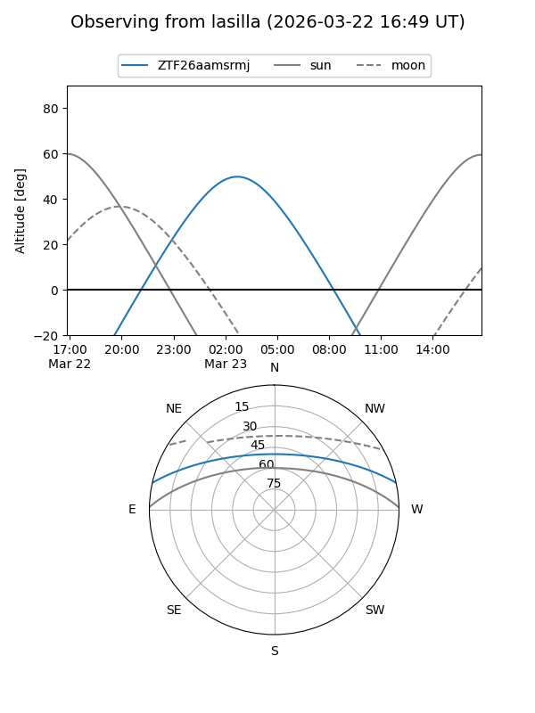
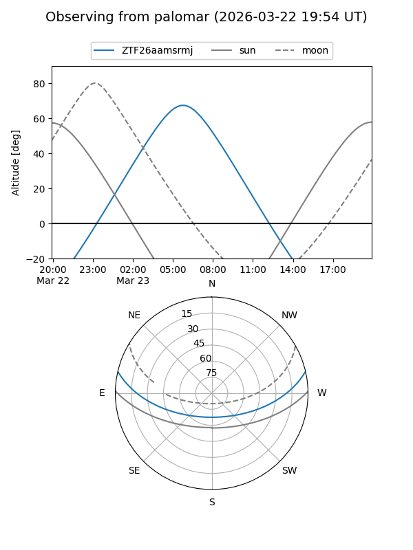

ZTF26aamsrmj
Target ZTF26aamsrmj at 2026-03-23 08:58
Aliases and brokers:
FINK: link
Lasair: link
ALeRCE: link
alt names
ZTF26aamsrmj (ztf,fink_ztf)
Coordinates:
equatorial (ra, dec) = 149.8891,+11.03264
equatorial (HMS+DMS) = 09:59:33.38,+11:01:57.50
galactic (l, b) = (226.1519,+46.58835)
Flags:
Photometry:
last ztfg=20.11
1 ztfg detections
Lightcurve
Visibility


Additional plots